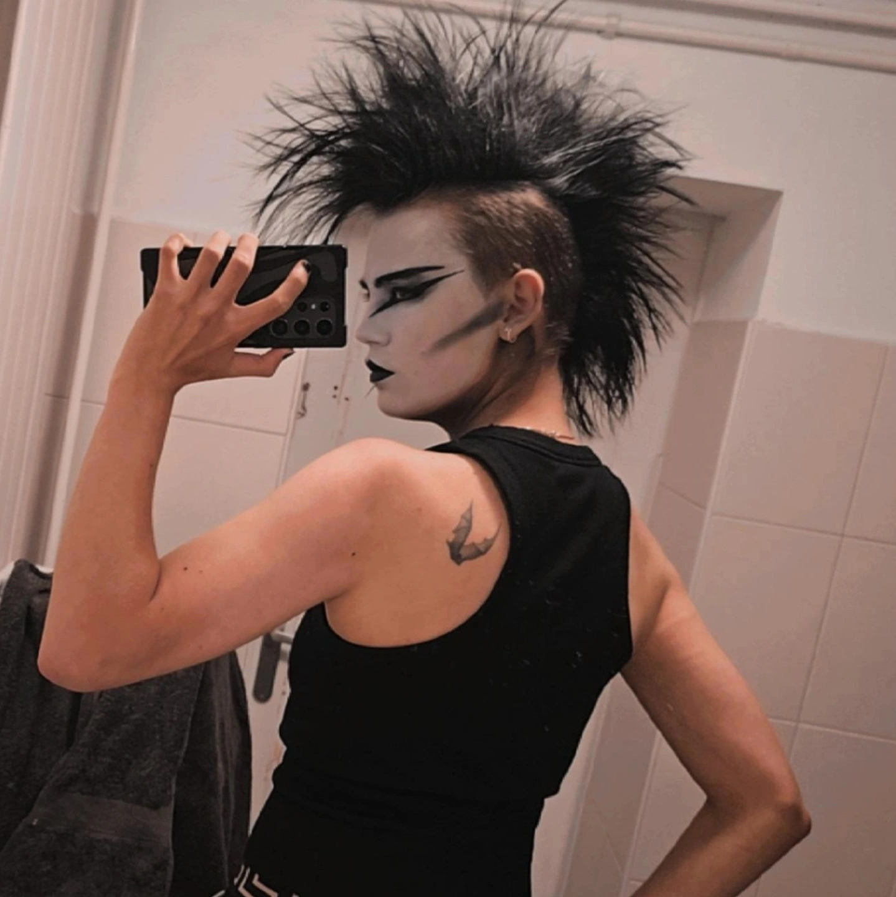
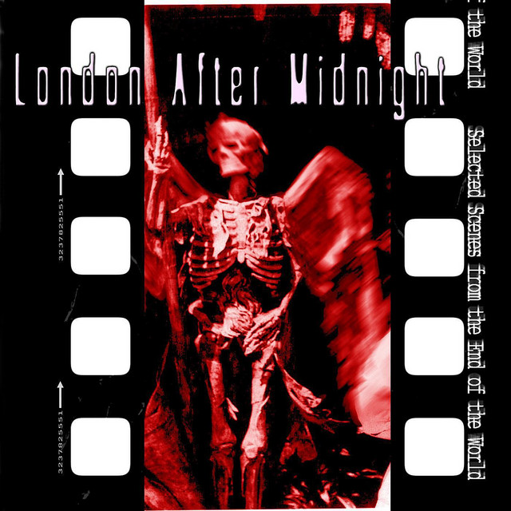
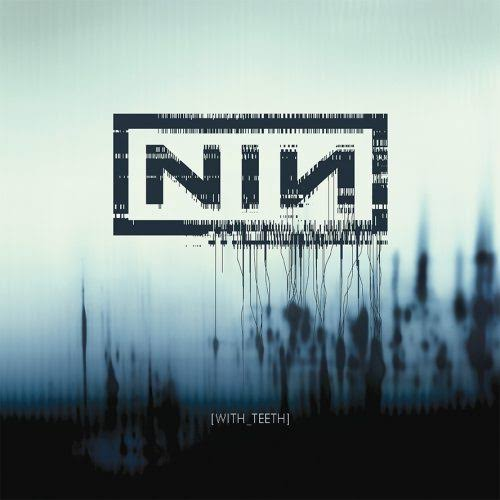
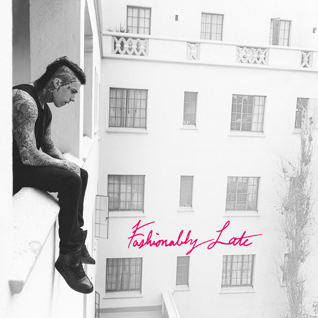
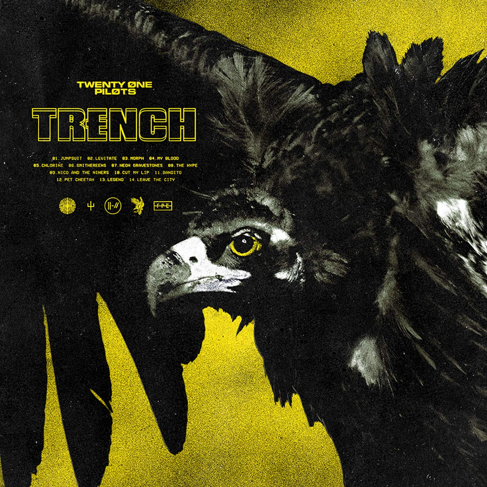

This is my first website.

My name is Dorian, I am 20 years old.
I am currently studying ICT at Gilde.
I was born on November 12, 2005.
Here comes my longer text...
In my free time, I enjoy drumming, gaming, and being creative. For example, I like making clothes.
I mainly listen to goth and other darker music genres. Music is an important part of my style and personality. I also have a gothic clothing style.
I enjoy watching movies in the fantasy, action, science fiction, and adventure genres. Some of my favorite movies include Pirates of the Caribbean, The Lord of the Rings, and X-Men.
Pirates of the Caribbean is my favorite movie franchise. I first saw the first movie when I was eight years old, and I still consider it one of the best movie series I have ever seen.
I have a cat named Nova at home. She is currently 4 years old.



